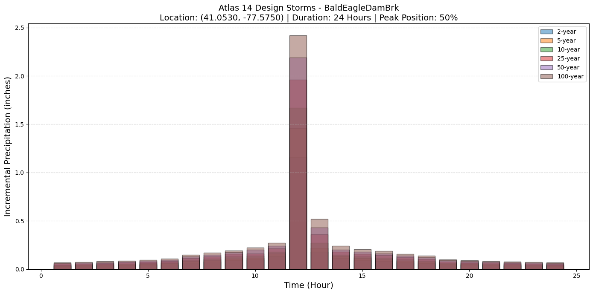

Atlas 14 Design Storm Generation with LLM Forward Caching¶
This notebook demonstrates the LLM Forward caching pattern for working with NOAA Atlas 14 precipitation data. This approach:
- Verifiable: Raw NOAA data saved to known location for review
- Reproducible: Same data used across all analyses
- Fast: No repeated API calls after initial download
- Offline: Works without internet after initial download
- Audit trail: Complete primary data source preserved
LLM Forward Pattern Overview¶
Instead of downloading Atlas 14 data to memory and discarding it, ras-commander saves the raw NOAA API response to your project folder:
project_folder/
└── NOAA_Atlas_14/
├── lat38.9_lon-77.0_depth_english_pds.json
└── ... (other cache files)
This cached data becomes the single source of truth for all design storms.
# =============================================================================
# DEVELOPMENT MODE TOGGLE
# =============================================================================
USE_LOCAL_SOURCE = False # <-- TOGGLE THIS
if USE_LOCAL_SOURCE:
import sys
from pathlib import Path
local_path = str(Path.cwd().parent)
if local_path not in sys.path:
sys.path.insert(0, local_path)
print(f"📁 LOCAL SOURCE MODE: Loading from {local_path}/ras_commander")
else:
from pathlib import Path # Import Path in pip mode too!
print("📦 PIP PACKAGE MODE: Loading installed ras-commander")
# Import ras-commander
from ras_commander import RasExamples, init_ras_project, ras
from ras_commander.precip import StormGenerator
from ras_commander.hdf import HdfProject
# Additional imports
import pandas as pd
import matplotlib.pyplot as plt
# Verify which version loaded
import ras_commander
print(f"✓ Loaded: {ras_commander.__file__}")
📦 PIP PACKAGE MODE: Loading installed ras-commander
✓ Loaded: c:\Users\billk_clb\anaconda3\envs\rascmdr_piptest\Lib\site-packages\ras_commander\__init__.py
=============================================================================¶
PARAMETERS - Edit these to customize the notebook¶
=============================================================================¶
from pathlib import Path
Project Configuration¶
PROJECT_NAME = "Muncie" # Example project to extract RAS_VERSION = "6.6" # HEC-RAS version
Atlas14 Location Settings¶
LATITUDE = 40.1934 # Latitude for Atlas14 data LONGITUDE = -85.3863 # Longitude for Atlas14 data
Cache Settings¶
CACHE_DIR = Path("_cache") / "atlas14" # Cache directory for Atlas14 data USE_CACHE = True # Whether to use caching
Storm Settings¶
STORM_DURATION_HOURS = 24 # Storm duration in hours AEP = 0.01 # Annual exceedance probability for demo
Output Configuration¶
OUTPUTS_DIR = Path("_outputs") / "721_atlas14_caching_demo"
Create directories¶
OUTPUTS_DIR.mkdir(parents=True, exist_ok=True) CACHE_DIR.mkdir(parents=True, exist_ok=True) print(f"Outputs will be saved to: {OUTPUTS_DIR.absolute()}") print(f"Cache directory: {CACHE_DIR.absolute()}")
# =============================================================================
# PARAMETERS - Edit these to customize the notebook
# =============================================================================
from pathlib import Path
# Project Configuration
PROJECT_NAME = "Muncie" # Example project to extract
RAS_VERSION = "6.6" # HEC-RAS version (6.3, 6.5, 6.6, etc.)
# Output Configuration
OUTPUTS_DIR = Path("_outputs") / "721_atlas14_caching_demo" # Artifacts saved here
# Sensitivity Analysis Settings
PLAN = "01" # Base plan for sensitivity runs
PARAMETER_VALUES = [0.8, 0.9, 1.0, 1.1, 1.2] # Multipliers to test
NUM_WORKERS = 4 # Parallel workers for sensitivity runs
# Create output directory
OUTPUTS_DIR.mkdir(parents=True, exist_ok=True)
print(f"Outputs will be saved to: {OUTPUTS_DIR.absolute()}")
Step 1: Extract Example Project and Get Location¶
We'll use an example HEC-RAS project and determine its location from the model geometry. The project centroid will be used for the Atlas 14 precipitation query.
# Extract an example project with 2D geometry
project_path = RasExamples.extract_project("BaldEagleCrkMulti2D")
print(f"Extracted project to: {project_path}")
# Initialize the project
init_ras_project(project_path, "6.6")
print(f"Initialized project: {ras.project_name}")
print(f"\nPlans available: {list(ras.plan_df['plan_number'])}")
print(f"Geometries available: {list(ras.geom_df['geom_number'])}")
2025-12-16 13:57:28 - ras_commander.RasExamples - INFO - Found zip file: C:\Users\billk_clb\anaconda3\envs\rascmdr_piptest\Lib\site-packages\examples\Example_Projects_6_6.zip
2025-12-16 13:57:28 - ras_commander.RasExamples - INFO - Loading project data from CSV...
2025-12-16 13:57:28 - ras_commander.RasExamples - INFO - Loaded 68 projects from CSV.
2025-12-16 13:57:28 - ras_commander.RasExamples - INFO - ----- RasExamples Extracting Project -----
2025-12-16 13:57:28 - ras_commander.RasExamples - INFO - Extracting project 'BaldEagleCrkMulti2D'
2025-12-16 13:57:28 - ras_commander.RasExamples - INFO - Folder 'BaldEagleCrkMulti2D' already exists. Deleting existing folder...
2025-12-16 13:57:28 - ras_commander.RasExamples - INFO - Existing folder 'BaldEagleCrkMulti2D' has been deleted.
2025-12-16 13:57:30 - ras_commander.RasExamples - INFO - Successfully extracted project 'BaldEagleCrkMulti2D' to C:\Users\billk_clb\anaconda3\envs\rascmdr_piptest\Lib\site-packages\examples\example_projects\BaldEagleCrkMulti2D
2025-12-16 13:57:30 - ras_commander.RasMap - INFO - Successfully parsed RASMapper file: C:\Users\billk_clb\anaconda3\envs\rascmdr_piptest\Lib\site-packages\examples\example_projects\BaldEagleCrkMulti2D\BaldEagleDamBrk.rasmap
Extracted project to: C:\Users\billk_clb\anaconda3\envs\rascmdr_piptest\Lib\site-packages\examples\example_projects\BaldEagleCrkMulti2D
Initialized project: BaldEagleDamBrk
Plans available: ['13', '15', '17', '18', '19', '03', '04', '02', '01', '05', '06']
Geometries available: ['06', '08', '10', '11', '12', '09', '13', '01', '03', '02']
# Get the geometry HDF file path
# Find a geometry with an HDF file
geom_hdf_path = None
for _, row in ras.geom_df.iterrows():
geom_path = row.get('full_path')
if geom_path:
hdf_candidate = Path(str(geom_path) + '.hdf')
if hdf_candidate.exists():
geom_hdf_path = hdf_candidate
print(f"Found geometry HDF: {geom_hdf_path}")
break
if geom_hdf_path is None:
# Try plan HDF files which also contain geometry
for _, row in ras.plan_df.iterrows():
hdf_path = row.get('HDF_Results_Path')
if hdf_path and Path(hdf_path).exists():
geom_hdf_path = Path(hdf_path)
print(f"Using plan HDF for geometry: {geom_hdf_path}")
break
if geom_hdf_path is None:
raise FileNotFoundError("No HDF file found with geometry data")
print(f"\nUsing HDF file: {geom_hdf_path.name}")
Found geometry HDF: C:\Users\billk_clb\anaconda3\envs\rascmdr_piptest\Lib\site-packages\examples\example_projects\BaldEagleCrkMulti2D\BaldEagleDamBrk.g06.hdf
Using HDF file: BaldEagleDamBrk.g06.hdf
# Get project bounds in lat/lon coordinates
# This automatically extracts geometry from 2D areas, cross sections, etc.
west, south, east, north = HdfProject.get_project_bounds_latlon(
geom_hdf_path,
buffer_percent=0.0 # No buffer - we just want the actual project extent
)
# Calculate centroid
lat = (north + south) / 2
lon = (east + west) / 2
print(f"Project Bounds (WGS84):")
print(f" West: {west:.6f}")
print(f" East: {east:.6f}")
print(f" South: {south:.6f}")
print(f" North: {north:.6f}")
print(f"\nProject Centroid:")
print(f" Latitude: {lat:.6f}")
print(f" Longitude: {lon:.6f}")
2025-12-16 13:57:30 - ras_commander.hdf.HdfProject - INFO - Using existing Path object HDF file: C:\Users\billk_clb\anaconda3\envs\rascmdr_piptest\Lib\site-packages\examples\example_projects\BaldEagleCrkMulti2D\BaldEagleDamBrk.g06.hdf
2025-12-16 13:57:30 - ras_commander.hdf.HdfProject - INFO - Final validated file path: C:\Users\billk_clb\anaconda3\envs\rascmdr_piptest\Lib\site-packages\examples\example_projects\BaldEagleCrkMulti2D\BaldEagleDamBrk.g06.hdf
2025-12-16 13:57:30 - ras_commander.hdf.HdfProject - INFO - Using existing Path object HDF file: C:\Users\billk_clb\anaconda3\envs\rascmdr_piptest\Lib\site-packages\examples\example_projects\BaldEagleCrkMulti2D\BaldEagleDamBrk.g06.hdf
2025-12-16 13:57:30 - ras_commander.hdf.HdfProject - INFO - Final validated file path: C:\Users\billk_clb\anaconda3\envs\rascmdr_piptest\Lib\site-packages\examples\example_projects\BaldEagleCrkMulti2D\BaldEagleDamBrk.g06.hdf
2025-12-16 13:57:30 - ras_commander.hdf.HdfMesh - INFO - Using existing Path object HDF file: C:\Users\billk_clb\anaconda3\envs\rascmdr_piptest\Lib\site-packages\examples\example_projects\BaldEagleCrkMulti2D\BaldEagleDamBrk.g06.hdf
2025-12-16 13:57:30 - ras_commander.hdf.HdfMesh - INFO - Final validated file path: C:\Users\billk_clb\anaconda3\envs\rascmdr_piptest\Lib\site-packages\examples\example_projects\BaldEagleCrkMulti2D\BaldEagleDamBrk.g06.hdf
2025-12-16 13:57:30 - ras_commander.hdf.HdfMesh - INFO - Using existing Path object HDF file: C:\Users\billk_clb\anaconda3\envs\rascmdr_piptest\Lib\site-packages\examples\example_projects\BaldEagleCrkMulti2D\BaldEagleDamBrk.g06.hdf
2025-12-16 13:57:30 - ras_commander.hdf.HdfMesh - INFO - Final validated file path: C:\Users\billk_clb\anaconda3\envs\rascmdr_piptest\Lib\site-packages\examples\example_projects\BaldEagleCrkMulti2D\BaldEagleDamBrk.g06.hdf
2025-12-16 13:57:30 - ras_commander.hdf.HdfBase - INFO - Using HDF file from h5py.File object: C:\Users\billk_clb\anaconda3\envs\rascmdr_piptest\Lib\site-packages\examples\example_projects\BaldEagleCrkMulti2D\BaldEagleDamBrk.g06.hdf
2025-12-16 13:57:30 - ras_commander.hdf.HdfBase - INFO - Final validated file path: C:\Users\billk_clb\anaconda3\envs\rascmdr_piptest\Lib\site-packages\examples\example_projects\BaldEagleCrkMulti2D\BaldEagleDamBrk.g06.hdf
2025-12-16 13:57:30 - ras_commander.hdf.HdfBase - INFO - Found projection in RASMapper file: C:\Users\billk_clb\anaconda3\envs\rascmdr_piptest\Lib\site-packages\examples\example_projects\BaldEagleCrkMulti2D\Terrain\Projection.prj
2025-12-16 13:57:30 - ras_commander.hdf.HdfBase - INFO - Converted WKT to EPSG:2271 from RASMapper file Projection.prj
2025-12-16 13:57:30 - ras_commander.hdf.HdfProject - INFO - Found 3 2D flow areas
2025-12-16 13:57:30 - ras_commander.hdf.HdfProject - INFO - Found 192 cross sections
2025-12-16 13:57:30 - ras_commander.hdf.HdfXsec - INFO - Using existing Path object HDF file: C:\Users\billk_clb\anaconda3\envs\rascmdr_piptest\Lib\site-packages\examples\example_projects\BaldEagleCrkMulti2D\BaldEagleDamBrk.g06.hdf
2025-12-16 13:57:30 - ras_commander.hdf.HdfXsec - INFO - Final validated file path: C:\Users\billk_clb\anaconda3\envs\rascmdr_piptest\Lib\site-packages\examples\example_projects\BaldEagleCrkMulti2D\BaldEagleDamBrk.g06.hdf
2025-12-16 13:57:30 - ras_commander.hdf.HdfBase - INFO - Using existing Path object HDF file: C:\Users\billk_clb\anaconda3\envs\rascmdr_piptest\Lib\site-packages\examples\example_projects\BaldEagleCrkMulti2D\BaldEagleDamBrk.g06.hdf
2025-12-16 13:57:30 - ras_commander.hdf.HdfBase - INFO - Final validated file path: C:\Users\billk_clb\anaconda3\envs\rascmdr_piptest\Lib\site-packages\examples\example_projects\BaldEagleCrkMulti2D\BaldEagleDamBrk.g06.hdf
2025-12-16 13:57:30 - ras_commander.hdf.HdfBase - INFO - Using existing Path object HDF file: C:\Users\billk_clb\anaconda3\envs\rascmdr_piptest\Lib\site-packages\examples\example_projects\BaldEagleCrkMulti2D\BaldEagleDamBrk.g06.hdf
2025-12-16 13:57:30 - ras_commander.hdf.HdfBase - INFO - Final validated file path: C:\Users\billk_clb\anaconda3\envs\rascmdr_piptest\Lib\site-packages\examples\example_projects\BaldEagleCrkMulti2D\BaldEagleDamBrk.g06.hdf
2025-12-16 13:57:30 - ras_commander.hdf.HdfBase - INFO - Found projection in RASMapper file: C:\Users\billk_clb\anaconda3\envs\rascmdr_piptest\Lib\site-packages\examples\example_projects\BaldEagleCrkMulti2D\Terrain\Projection.prj
2025-12-16 13:57:30 - ras_commander.hdf.HdfBase - INFO - Converted WKT to EPSG:2271 from RASMapper file Projection.prj
2025-12-16 13:57:30 - ras_commander.hdf.HdfXsec - INFO - Extracted 1 river centerlines
2025-12-16 13:57:30 - ras_commander.hdf.HdfProject - INFO - Found 1 river centerlines
2025-12-16 13:57:30 - ras_commander.hdf.HdfProject - INFO - Original extent: (1966056.94, 289524.52, 2067365.40, 356568.61)
2025-12-16 13:57:30 - ras_commander.hdf.HdfProject - INFO - Buffered extent (0.0% x, 0.0% y): (1966056.94, 289524.52, 2067365.40, 356568.61)
2025-12-16 13:57:30 - ras_commander.hdf.HdfProject - INFO - WGS84 bounds: W=-77.758870, S=40.960741, E=-77.391037, N=41.145314
Project Bounds (WGS84):
West: -77.758870
East: -77.391037
South: 40.960741
North: 41.145314
Project Centroid:
Latitude: 41.053028
Longitude: -77.574953
Step 2: Download and Cache Atlas 14 Data¶
First time: Downloads from NOAA API and saves to cache
Subsequent times: Loads from cache (no API request)
print(f"Project folder: {project_path}")
print(f"Coordinates: ({lat:.4f}, {lon:.4f})")
print("\n" + "="*70)
print("DOWNLOADING ATLAS 14 DATA (or loading from cache)")
print("="*70)
# Download and cache Atlas 14 data using project centroid
gen = StormGenerator.download_from_coordinates(
lat=lat,
lon=lon,
project_folder=project_path # CRITICAL: This enables caching to the project folder
)
# Check cache location
cache_dir = project_path / "NOAA_Atlas_14"
cache_file = cache_dir / f"lat{lat}_lon{lon}_depth_english_pds.json"
if cache_file.exists():
print(f"\n✓ Cache file exists: {cache_file}")
print(f" File size: {cache_file.stat().st_size / 1024:.1f} KB")
else:
# Check for any cache file (coordinates might be slightly different)
cache_files = list(cache_dir.glob("*.json")) if cache_dir.exists() else []
if cache_files:
print(f"\n✓ Cache file found: {cache_files[0].name}")
print(f" File size: {cache_files[0].stat().st_size / 1024:.1f} KB")
else:
print(f"\n⚠ Cache file not found in: {cache_dir}")
2025-12-16 13:57:30 - ras_commander.precip.StormGenerator - INFO - Downloading Atlas 14 data for (41.05302775109011, -77.57495349718292)...
Project folder: C:\Users\billk_clb\anaconda3\envs\rascmdr_piptest\Lib\site-packages\examples\example_projects\BaldEagleCrkMulti2D
Coordinates: (41.0530, -77.5750)
======================================================================
DOWNLOADING ATLAS 14 DATA (or loading from cache)
======================================================================
2025-12-16 13:57:31 - ras_commander.precip.StormGenerator - INFO - Cached Atlas 14 data to: C:\Users\billk_clb\anaconda3\envs\rascmdr_piptest\Lib\site-packages\examples\example_projects\BaldEagleCrkMulti2D\NOAA_Atlas_14\lat41.05302775109011_lon-77.57495349718292_depth_english_pds.json
2025-12-16 13:57:31 - ras_commander.precip.StormGenerator - INFO - Downloaded Atlas 14 data for region: Ohio River Basin
✓ Cache file exists: C:\Users\billk_clb\anaconda3\envs\rascmdr_piptest\Lib\site-packages\examples\example_projects\BaldEagleCrkMulti2D\NOAA_Atlas_14\lat41.05302775109011_lon-77.57495349718292_depth_english_pds.json
File size: 9.6 KB
Step 3: Generate Design Storms from Cached Data¶
All subsequent storm generations use the cached data - no additional API calls.
# Define AEP events (return periods)
aep_events = [2, 5, 10, 25, 50, 100] # years
duration_hours = 24
position_percent = 50 # Centered peak
print("Generating design storms for AEP events:")
print(f" Events: {aep_events}")
print(f" Duration: {duration_hours} hours")
print(f" Peak position: {position_percent}%")
print()
# Generate hyetographs
hyetographs = {}
for ari in aep_events:
print(f"Generating {ari}-year event...")
# Generate from cached data
hyeto = gen.generate_hyetograph(
ari=ari,
duration_hours=duration_hours,
position_percent=position_percent
)
hyetographs[ari] = hyeto
# Show total depth
total_depth = hyeto['cumulative_depth'].iloc[-1]
print(f" {ari}-year, {duration_hours}-hr total depth: {total_depth:.2f} inches")
print("\n✓ All hyetographs generated from cached data")
2025-12-16 13:57:31 - ras_commander.precip.StormGenerator - INFO - Generated 2-year, 24-hour hyetograph (peak at 50%, total depth: 2.680)
2025-12-16 13:57:31 - ras_commander.precip.StormGenerator - INFO - Generated 5-year, 24-hour hyetograph (peak at 50%, total depth: 3.310)
2025-12-16 13:57:31 - ras_commander.precip.StormGenerator - INFO - Generated 10-year, 24-hour hyetograph (peak at 50%, total depth: 3.830)
2025-12-16 13:57:31 - ras_commander.precip.StormGenerator - INFO - Generated 25-year, 24-hour hyetograph (peak at 50%, total depth: 4.580)
2025-12-16 13:57:31 - ras_commander.precip.StormGenerator - INFO - Generated 50-year, 24-hour hyetograph (peak at 50%, total depth: 5.210)
2025-12-16 13:57:31 - ras_commander.precip.StormGenerator - INFO - Generated 100-year, 24-hour hyetograph (peak at 50%, total depth: 5.890)
Generating design storms for AEP events:
Events: [2, 5, 10, 25, 50, 100]
Duration: 24 hours
Peak position: 50%
Generating 2-year event...
2-year, 24-hr total depth: 2.68 inches
Generating 5-year event...
5-year, 24-hr total depth: 3.31 inches
Generating 10-year event...
10-year, 24-hr total depth: 3.83 inches
Generating 25-year event...
25-year, 24-hr total depth: 4.58 inches
Generating 50-year event...
50-year, 24-hr total depth: 5.21 inches
Generating 100-year event...
100-year, 24-hr total depth: 5.89 inches
✓ All hyetographs generated from cached data
Step 4: Visualize Design Storms¶
# Plot comparison
plt.figure(figsize=(14, 7))
for ari in aep_events:
hyeto = hyetographs[ari]
plt.bar(
hyeto['hour'],
hyeto['incremental_depth'],
width=0.8,
alpha=0.5,
edgecolor='black',
label=f'{ari}-year'
)
plt.xlabel('Time (Hour)', fontsize=14)
plt.ylabel('Incremental Precipitation (inches)', fontsize=14)
plt.title(f'Atlas 14 Design Storms - {ras.project_name}\n'
f'Location: ({lat:.4f}, {lon:.4f}) | Duration: {duration_hours} Hours | Peak Position: {position_percent}%',
fontsize=14)
plt.legend()
plt.grid(axis='y', linestyle='--', alpha=0.7)
plt.tight_layout()
plt.show()

Step 5: Export for HEC-RAS¶
Hyetographs can be exported to CSV for incorporation into HEC-RAS unsteady flow files.
# Create output directory within project folder
output_dir = project_path / "hyetographs"
output_dir.mkdir(parents=True, exist_ok=True)
print(f"Saving hyetographs to: {output_dir}")
print()
# Save each hyetograph
for ari in aep_events:
hyeto = hyetographs[ari]
# Create filename
filename = f"hyetograph_ARI_{ari}_years_pos{position_percent}pct_{duration_hours}hr.csv"
filepath = output_dir / filename
# Save to CSV
hyeto.to_csv(filepath, index=False)
print(f"✓ Saved: {filename}")
print(f"\nAll hyetographs saved to: {output_dir}")
Saving hyetographs to: C:\Users\billk_clb\anaconda3\envs\rascmdr_piptest\Lib\site-packages\examples\example_projects\BaldEagleCrkMulti2D\hyetographs
✓ Saved: hyetograph_ARI_2_years_pos50pct_24hr.csv
✓ Saved: hyetograph_ARI_5_years_pos50pct_24hr.csv
✓ Saved: hyetograph_ARI_10_years_pos50pct_24hr.csv
✓ Saved: hyetograph_ARI_25_years_pos50pct_24hr.csv
✓ Saved: hyetograph_ARI_50_years_pos50pct_24hr.csv
✓ Saved: hyetograph_ARI_100_years_pos50pct_24hr.csv
All hyetographs saved to: C:\Users\billk_clb\anaconda3\envs\rascmdr_piptest\Lib\site-packages\examples\example_projects\BaldEagleCrkMulti2D\hyetographs
Step 6: Verify Cached Data¶
The cached Atlas 14 data is human-readable JSON. Let's inspect it to verify the primary data source.
import json
# Find the cache file
cache_dir = project_path / "NOAA_Atlas_14"
cache_files = list(cache_dir.glob("*.json")) if cache_dir.exists() else []
if cache_files:
cache_file = cache_files[0]
# Read cached data
with open(cache_file, "r") as f:
cached_data = json.load(f)
print("Atlas 14 Cached Data Structure:")
print("="*70)
print(f"Region: {cached_data.get('region', 'Unknown')}")
print(f"Latitude: {cached_data.get('lat')}")
print(f"Longitude: {cached_data.get('lon')}")
print(f"Units: {cached_data.get('unit', 'Unknown')}")
print(f"Series Type: {cached_data.get('ser', 'Unknown')}")
print()
quantiles = cached_data.get("quantiles", [])
print(f"Number of durations: {len(quantiles)}")
print(f"Number of return periods per duration: {len(quantiles[0]) if quantiles else 0}")
print()
print("Sample data (first duration, all return periods):")
print(f" {quantiles[0] if quantiles else []}")
print()
print("Raw NOAA data preserved in project folder")
print(f" Location: {cache_file}")
print(f" This file is the authoritative source for all design storms")
else:
print("No cache file found - data may have been loaded from existing cache")
Atlas 14 Cached Data Structure:
======================================================================
Region: Ohio River Basin
Latitude: 41.0530
Longitude: -77.5750
Units: english
Series Type: pds
Number of durations: 19
Number of return periods per duration: 10
Sample data (first duration, all return periods):
['0.312', '0.371', '0.444', '0.499', '0.568', '0.619', '0.670', '0.720', '0.787', '0.835']
Raw NOAA data preserved in project folder
Location: C:\Users\billk_clb\anaconda3\envs\rascmdr_piptest\Lib\site-packages\examples\example_projects\BaldEagleCrkMulti2D\NOAA_Atlas_14\lat41.05302775109011_lon-77.57495349718292_depth_english_pds.json
This file is the authoritative source for all design storms
Benefits of LLM Forward Caching¶
Traditional Approach (Without Caching)¶
# Downloads from API every time (slow, requires internet)
gen = StormGenerator.download_from_coordinates(lat, lon)
# Data discarded after use - no audit trail
LLM Forward Approach (With Caching)¶
# Get project location from geometry
west, south, east, north = HdfProject.get_project_bounds_latlon(geom_hdf_path)
lat, lon = (north + south) / 2, (east + west) / 2
# First time: Downloads from API and caches
# Subsequent times: Loads from cache (fast, offline)
gen = StormGenerator.download_from_coordinates(
lat, lon,
project_folder=project_path # Enables caching
)
# Raw NOAA data preserved in {project_folder}/NOAA_Atlas_14/
Key Advantages¶
- Verifiable: Raw NOAA data reviewable by engineers, reviewers, and stakeholders
- Reproducible: Same exact data used every time (no API variability)
- Fast: Subsequent runs load from disk (~ms) instead of API (~seconds)
- Offline: Works without internet after initial download
- Audit Trail: Complete primary data source preserved with project
- Location-Aware: Automatically uses project centroid for queries
Cache File Format¶
Cache filename: lat{lat}_lon{lon}_{data}_{units}_{series}.json
Example: lat40.912_lon-77.793_depth_english_pds.json
Contents: Complete NOAA Atlas 14 API response (human-readable JSON)
Integration with HEC-RAS Workflows¶
The generated hyetographs can be integrated into HEC-RAS unsteady flow files:
- Load hyetograph from CSV
- Update Precipitation Hydrograph table in
.u##file - Set time interval to match hyetograph
- Run HEC-RAS simulation
See notebook 103_Running_AEP_Events_from_Atlas_14.ipynb for complete integration example.